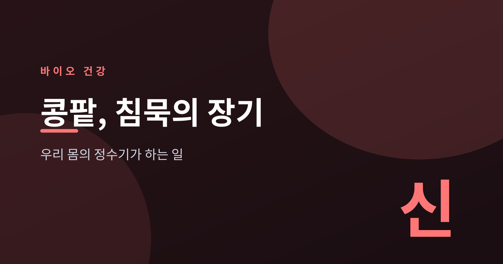
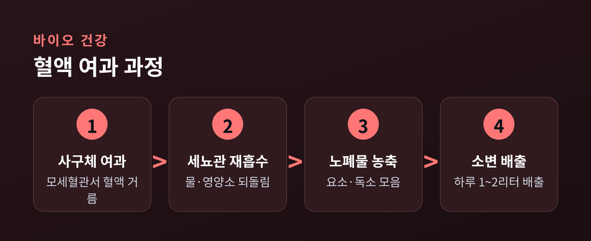
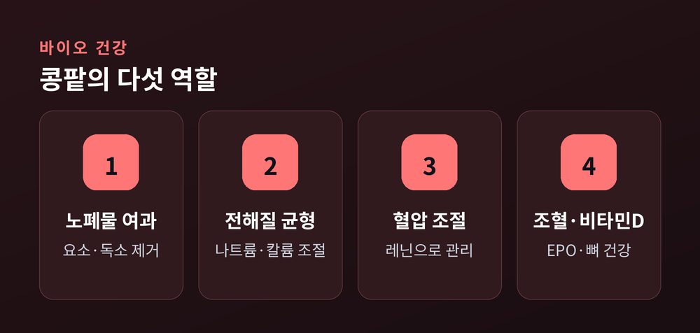
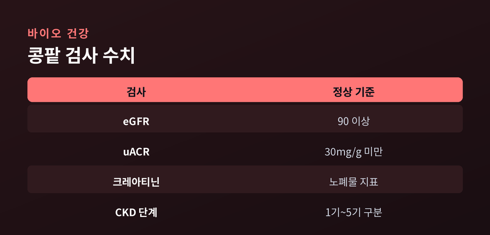

침묵의 장기, 우리 몸의 정수기

콩팥은 등 뒤 허리춤에 자리한 주먹만 한 장기다. 하루도 쉬지 않고 피를 걸러내지만, 병이 깊어질 때까지 좀처럼 신호를 보내지 않는다. 그래서 콩팥은 흔히 '침묵의 장기'로 불린다.
콩팥은 우리 몸의 정수기다. 하루 동안 걸러내는 혈액의 양은 약 180리터에 이른다. 그중 99퍼센트는 다시 몸으로 돌려보내고, 최종적으로 남은 노폐물과 수분만 소변으로 배출한다. 하루 소변량은 대개 1~2리터 수준이다.
이 여과를 맡는 최소 단위가 네프론이다. 콩팥 하나에 약 100만 개가 들어 있다. 혈액은 사구체라는 모세혈관 덩어리를 지나며 걸러지고, 필요한 물과 영양소는 세뇨관에서 재흡수된다.

콩팥의 일은 노폐물 처리에만 그치지 않는다. 몸속 환경을 일정하게 유지하는 조절자 역할까지 맡는다.

| 기능 | 설명 |
|---|---|
| 노폐물 여과 | 혈액 속 요소·크레아티닌 제거 |
| 수분·전해질 균형 | 나트륨·칼륨·칼슘 농도 조절 |
| 혈압 조절 | 레닌 분비로 혈압 관리 |
| 적혈구 생성 | EPO 분비로 조혈 자극 |
| 비타민D 활성화 | 칼슘 흡수와 뼈 건강 지원 |
이 다섯 가지가 무너지면 빈혈, 뼈 약화, 고혈압이 함께 찾아오는 이유가 여기에 있다.
만성콩팥병(CKD)은 콩팥 기능이 서서히 떨어지는 상태로, 여과 기능을 나타내는 eGFR 값에 따라 1기부터 5기로 나뉜다. 가장 큰 위험요인은 당뇨병과 고혈압이다. 두 질환이 콩팥의 미세혈관을 서서히 망가뜨린다.
문제는 초기 증상이 거의 없다는 점이다. 미국 질병통제예방센터(CDC)에 따르면 성인 7명 중 1명꼴로 CKD를 앓지만, 그중 약 90퍼센트는 자신의 상태를 모른다.

| 검사 항목 | 정상 기준 |
|---|---|
| eGFR | 90 이상 (60 미만 주의) |
| 소변 알부민(uACR) | 30mg/g 미만 |
| 혈청 크레아티닌 | 노폐물 지표 |
eGFR이 60 이상이어도 단백뇨가 있으면 콩팥병일 수 있다. 그래서 두 검사를 함께 봐야 한다.
콩팥은 요란하게 아프다고 말하지 않는다. 그러나 정기 검진의 간단한 혈액·소변 검사만으로도 이상은 일찍 드러난다. 당뇨나 고혈압이 있다면 더욱 주기적인 확인이 필요하다. 본 글은 일반 건강정보이며, 진단과 치료는 반드시 의료진과 상담해야 한다.
"침묵의 장기가 보내는 신호는, 검사지 위의 숫자다."
콩팥이 조용할 때, 우리가 먼저 물어봐야 한다.